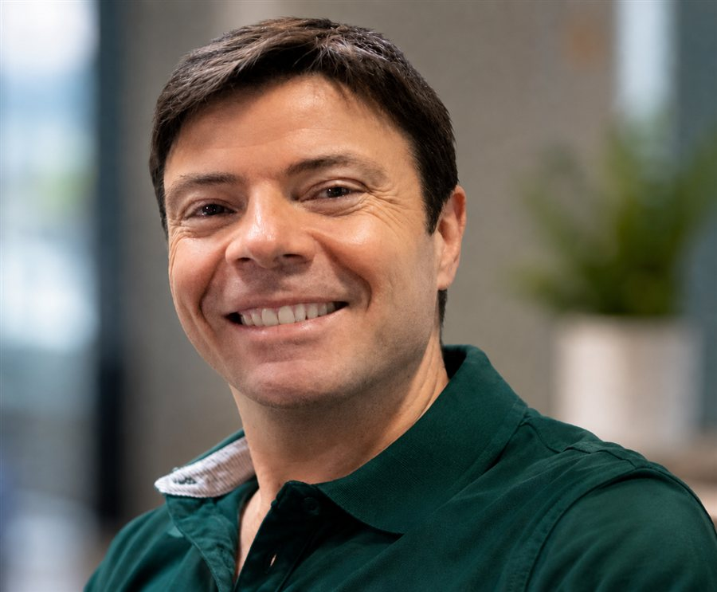
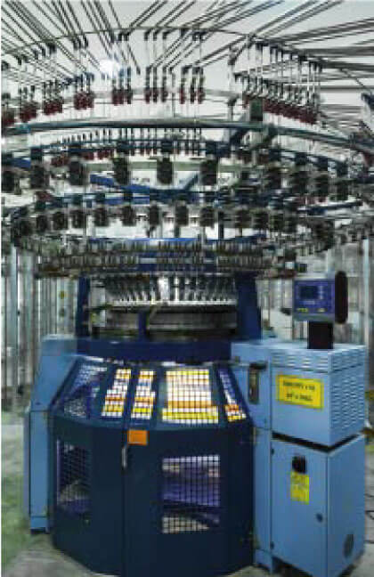
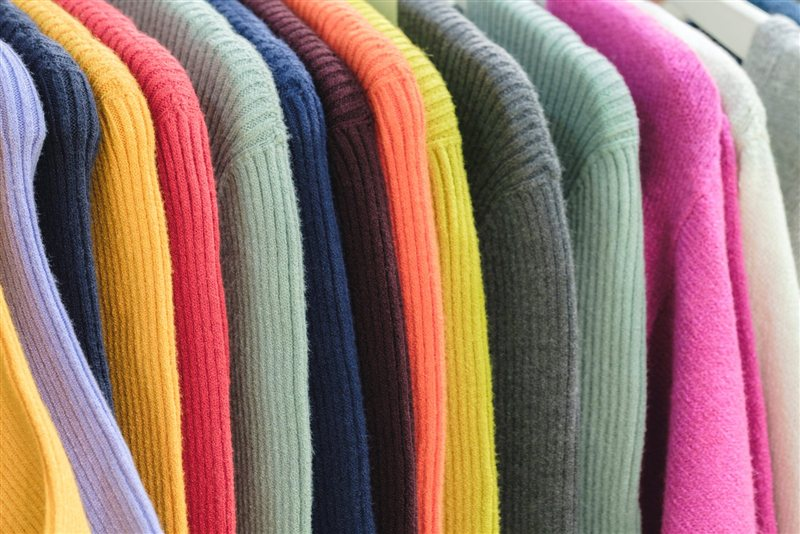
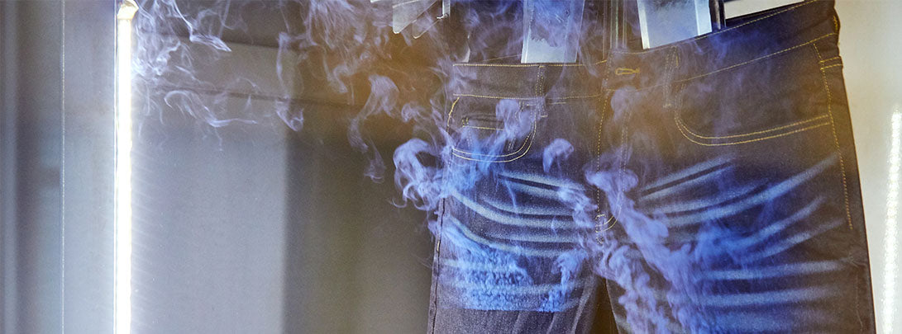
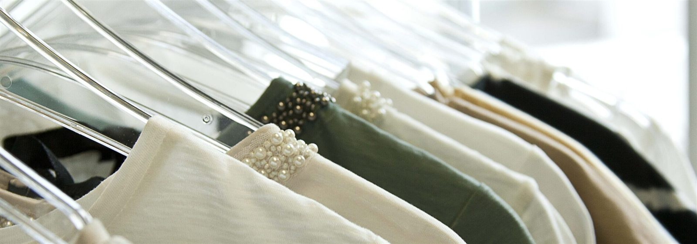

I identify the right factory for your product and manage sampling, price negotiation, quality control and order follow-up through to delivery — across Bangladesh, India, Pakistan, Sri Lanka and Turkey.
Get in touchUntil June 2026 I was Head of Global Sourcing & Operations at Original Marines, an Italian retailer producing around 20 million garments a year across South Asia and Turkey.
I built and ran the company's liaison office in Dhaka — a team of 27 handling vendor management, merchandising, quality assurance and compliance — after fourteen years living and working on the ground in Bangladesh. Today I bring that same operational structure to brands as an independent specialist: the standards and discipline of a large buying organisation, with the speed of a single point of contact.


Jersey, t-shirts, polos, fleece, sweatshirts, basics and loungewear — high-volume programmes as well as mid-sized runs.

Sweaters, pullovers and cardigans in cotton, blends and fine gauges, from a vetted flat-knit factory base.

Shirts, dresses, trousers and outerwear — denim and non-denim — with full development and wash capabilities.

A supplier base built over two decades, matched to each brand's segment and price point.
If there's a product where you'd like to explore alternative sourcing, it's fifteen minutes of a call well spent.